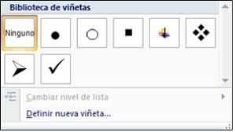
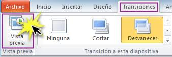
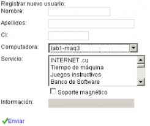

| Términos español/ ingles |
Español |
Ingles |
Imagenes |
| 3D |
Representación visual de algo en tres dimensiones: longitud (profundidad), anchura y altura |
Visual representation of something in three dimensions: length (depth), width and height |

|
| live |
Es una forma de transmitir contenido en tiempo real a través de internet. |
It is a way of transmitting content in real time over the Internet. |

|
| viñetas |
Elementos gráficos como círculos, flechas estilizadas, cuadrados y otros estilos que distinguen los ítems de un listado. |
Graphic elements such as circles, stylized arrows, squares and other styles that distinguish the items in a list. |

|
| transicion |
Forma de generación de imágenes por ordenador que se centra en las imágenes en movimiento. |
Process of changes that occur during the development of a technology from its birth to its date of deterioration |

|
| reunion virtual |
Encuentro digital en el que dos o más personas se encuentran a través de alguna plataforma online. |
Digital meeting in which two or more people meet through some online platform. |

|
| formulario |
Es un documento, ya sea físico o digital, diseñado con el propósito de que el usuario introduzca datos estructurados. |
It is a document, whether physical or digital, designed for the purpose of the user entering structured data |

|